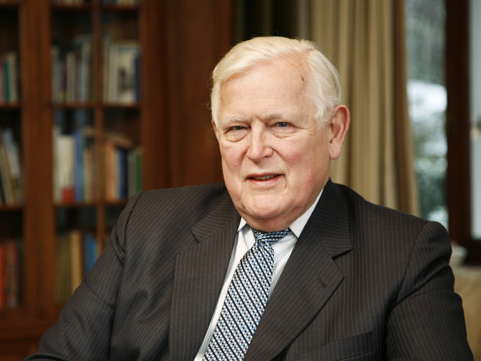

Re:search (1/3)
INTRO (Part 1)
My research starts with my master thesis and is, at least for my PhD, mainly focused on tracking problems. In a classical tracking problem one is interested into estimate the positions (aka the "track") of a moving object given some observations of its position (or velocity) generated by a non-cooperative sensor, such as a ground-based radar. By far, the most common solution is provided by the [Kalman filter], which is an iterative algorithm that is characterized by some very nice properties:- 1) easy to understand and to implement on a computer;
- 2) negligible computational cost, which allows the implementation in many real-time applications;
- 3) allows to filter out (from here the term "filter") the inevitable noise detrementing the accuracy of the observations;
- 4) allows to easily fuse multiple observations, not necessarily uncorrelated, provided by different sensors.

These reasons clearly explains the 60+ years of success of the Kalman filter and why nowdays the state-of-the-art trackers are still
based on such algorithm.
However, in its standard conception, the Kalman filter does not take into account some important phenomena which cannot be neglected in many real-world applications and remarkably increase the difficulty of the tracking problem, for example:
- 1) not just a single one, but rather multiple objects (which one must track all of them!) can be simultaneously present in the field of view of the sensor;
- 2) if an object is close to the sensor then there is a good chance that the sensor can detect multiple reflection points of such object - especially in the [LIDAR] case;
- 3) the field of view of the sensor can be partially occluded, meaning that some objects can be present in the field of view but not detected at the same time;
- 4) multiple spurious objects (which one does not want track!) can be present in the field of view of the sensor and detected.

{kind=link}